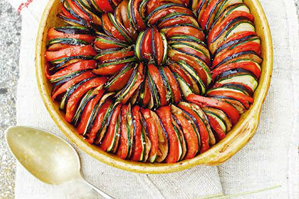

Heerlijke traditionele vegetarische ratatouille!

Ingredienten
- 1 aubergine
- 1 courgette
- 1 rode en gele paprika
- 2 el olijfolie
- 3 tomaten
- 1 el tomatenpuree
- 1 ui
- 2 teentjes knoflook
- 2 el rode wijnazijn
- scheut water
- 1 tl rietsuiker
- basilicum blaadjes
- zout & peper
Bereiding
- Snijd de aubergine, courgette en de paprika’s in grove stukken
- Verhit een grote braadpan of wok met wat olie en bak de groenten hier in
- Blijf omscheppen zodat de groenten gelijk matig bruin worden
- Snijd tussendoor de tomaten in vier stukken
- Schep het vruchtenvlees eruit en snijd dan de tomaten in grove stukken
- Daarna schep je een eetlepel tomatenpuree in de pan en bak dit 2 minuten mee samen met de stukken
tomaat
- Schep dan alle groenten in een schaal
- Snijd daarna de ui in ringen en de knoflook in reepjes
- Bak de ui en knoflook in een wokpan met wat olie
- Schenk dan de rode wijnazijn en een scheutje water ebij
- Roer er daarna 1 tl rietsuiker doorheen en laat dit zachtjes 1 minuut pruttelen
- Schep daarna de groenten er weer doorheen
- Meng dit goed door elkaar zodat alle groenten bedenkt zijn met een laagje
- Hak dan de basilicumblaadjes grof en schep deze hierdoor heen
- Laat de ratatouille nog 10 minuutjes stomen met de deksel op de pan
- Schenk er nog wat water bij als het te droog is
- Breng hem als laatste op smaak met wat zout en peper